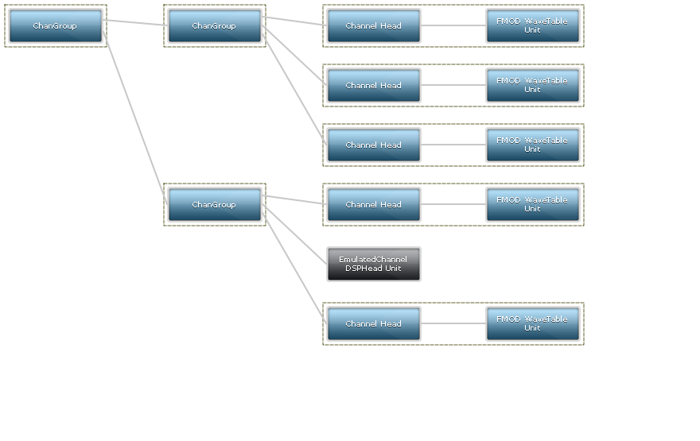

FMOD Engine User Manual 2.02
FMOD Core API includes an efficient virtual voice system. FMOD Studio API adds another layer of control on top of that with event polyphony. The following sections describe how best to take advantage of the virtual voice system.
FMOD Core API includes a virtual voice system. It allows the developer to play hundreds or even thousands of sounds at once, but only have a small number actually producing sound. For example a dungeon may have 200 torches burning on the wall in various places but only the loudest will be really playing. FMOD will dynamically make Channels virtual or real depending on real time audibility. A sound which is playing far off or with a low volume will become virtual, but will change to a real Channel when it comes closer or becomes louder due to Channel or ChannelGroup API calls.
The virtual voice system automatically takes into account the following when calculating audibility:
A Channel can be queried for whether it is virtual with the Channel::isVirtual function. When going virtual, the sound's time will still be ticked and any fade points will still continue to interpolate. Any additional DSPs attached to the Channel will be preserved. When the Channel becomes real again, it will resume as if it had been playing properly.
Peak volume is available for sounds that are exported via FSBank as long as the "Write peak volume" option is enabled. FMOD Studio tool always enables this flag when exporting banks, so FMOD Studio sounds will always have a peak volume. If the peak volume is not present (such as a loose wav file), then the sound will be treated as if it had full volume.
FMOD provides a simple and powerful way of controlling which Channels go virtual, by using a Channel priority. Channel priority set with Channel::setPriority or Sound::setDefaults, where a smaller integer value corresponds to a higher (more important) priority. If a Channel is a higher priority than another, then it will always take precedence regardless of its volume, distance, or gain calculation. Channels with a high priority will never be stolen by those with a lower priority, ever. The only time a Channel with a high priority will go virtual is if other Channels with an equal or even higher priority are playing, or if FMOD_INIT_VOL0_BECOMES_VIRTUAL has been specified and the sound is effectively silent.
Important sounds should have higher priority and it is up to the user to decide if some sounds should be more important than others. An example of an important sound might be a 2D menu or GUI sound or beep that needs to be heard above all other sounds. Avoid using too many priority levels in a fine-grained way. If a sound has a higher priority it will never be stolen, even if it is very quiet compared to a lower priority sound.
An important part of the virtual voice system is the FMOD_INIT_VOL0_BECOMES_VIRTUAL flag. When this flag is enabled, Channels will automatically go virtual when their audibility drops below the limit specified in the FMOD_ADVANCEDSETTINGS vol0virtualvol field. This is useful to remove sounds which are effectively silent, which is both a performance and quality improvement. Since it is only removing silent sounds, there should be no perceived difference in sound output when enabling this flag.
It is strongly recommended that FMOD_INIT_VOL0_BECOMES_VIRTUAL is specified in System::init or Studio::System::initialize, and that the FMOD_ADVANCEDSETTINGS::vol0virtualvol field is set to a small non-zero amount, such as 0.001. For users of FMOD Studio API, System::setAdvancedSettings can be called by getting the Studio::System::getCoreSystem after Studio::System::create but before Studio::System::initialize.
To set the number of virtual Channels FMOD will use, call System::init with the number of virtual Channels specified in the maxchannels parameter. To set the number of software mixed Channels available, use System::setSoftwareChannels. A further limit is available per codec by using FMOD_ADVANCEDSETTINGS.
If the virtual Channel limit is hit then Channels will be stolen and start returning FMOD_ERR_INVALID_HANDLE. Channels which have had their handle stolen in this way are permanently stopped and will never return.
Assuming the number of playing Channels is below the maximum virtual Channel limit, then the Channel handle will remain valid, but the Channel may be virtual or real depending on audibility. The maximum number of real playing Channels will be the limit set by System::setSoftwareChannels, or the limits of the codecs set with FMOD_ADVANCEDSETTINGS.
For typical games, it is reasonable to set the maxchannels value of System::init to some high value, from a few hundred up to a thousand or more. The number of real software Channels is often set lower, at anywhere from 32 to 128. This allows the game to create and keep track of a large number of Channels, but still limit the CPU cost by having a small number actually playing at once.
The way the virtual voice system works is that when sounds become real they resume from their proper place, halfway through the sound. To change this behavior, you can either use Sound or Channel priorities to stop it going virtual in the first place, or you have the option to have a Channel start from the beginning instead of half way through, by using the FMOD_VIRTUAL_PLAYFROMSTART flag with System::createSound, System::createStream, Sound::setMode or ChannelControl::setMode.
As described above, only the quietest, least important sounds should be swapping in and out, so you shouldn't notice sounds 'swapping in', but if you have a low number of real Channels, and they are all loud, then this behavior could become more noticeable and may sound bad.
Another option is to simply call Channel::isVirtual and stop the sound, but don't do this until after a System::update! After System::playSound, the virtual Channel sorting needs to be done in System::update to process what is really virtual and what isn't.
FMOD Studio API provides further ways of limiting playing Channels on top of the system provided by the Core API, by using event polyphony. The sound designer can specify a limit to the number of simultaneously playing instances of an event at once. There are currently two modes for event polyphony - Channel stealing on or off.
In this mode, once more instances are playing than the limit, then some will become virtual. Whether an event has become virtual can be queried with Studio::EventInstance::isVirtual. A virtual event will mute its master channel group, which will cause any playing Channels to go virtual if FMOD_INIT_VOL0_BECOMES_VIRTUAL has been specified.
Event virtualization is determined by an event's audibility, which is calculated based on the accumulated gain applied to the event's master track, as well any alterations applied to gain by fades, automation, and modulation. This includes:
Audibility is only calculated using the event's master channel group; the calculation does not include any gain applied to any child channels or channel groups.
An event which is virtual may become real at a later time if the audibility increases compared to the other playing instances.
In this mode, once the instance limit has been met, further instances will not play. Instances can still be created, and Studio::EventInstance::start can be called, but they will not actually play. Querying Studio::EventInstance::getPlaybackState will show that the extra instances are not in the playing state. Once instances fail to play then they will not start at a later time, regardless of what happens to the other instances. In this mode, event audibility has no affect on which instances play, it is simply based on which had Studio::EventInstance::start called first.
FMOD Studio events will ultimately create one or more core Channel objects to play sound. These Channels can go real or virtual based on the max software Channels set at initialization time. Therefore it is possible to have events where Studio::EventInstance::isVirtual is false, but some or all of the underlying Channels are virtual due to the software Channel limit. The Core API voice system will correctly take into account the bus set-up, distance attenuation, volume settings, and other DSP effects on Studio buses.
Studio Events can affect the Core API Virtual Voice selection system with the priority value controlled per-event in the FMOD Studio tool. Any Channels created by an Event will have the priority value exported from the FMOD Studio Tool. Unlike the Core API, the Studio tool only exposes 5 different values. This is done deliberately, since priority should not be used in a fine-grained way. Keep in mind that a higher priority Channel will never be stolen by a lower priority Channel, even if it is very quiet.
Another factor to keep in mind is that Event Priority is not inherited for nested events. It is possible to have a very high priority event that has a bunch of low priority nested events. In that case, the Channels may be virtualized even though ultimately the parent event is set to a high priority.
The FMOD Core API profiler tool displays the DSP graph, and can be used to quickly see which Channels have gone virtual. Consider the Channel Groups Example. If we add FMOD_INIT_PROFILE_ENABLE and add a call to System::setSoftwareChannels with 5, then we see one of the 6 Channels has gone virtual:
